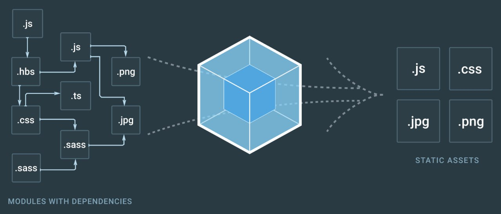
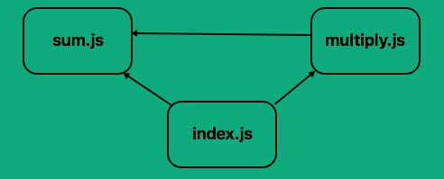
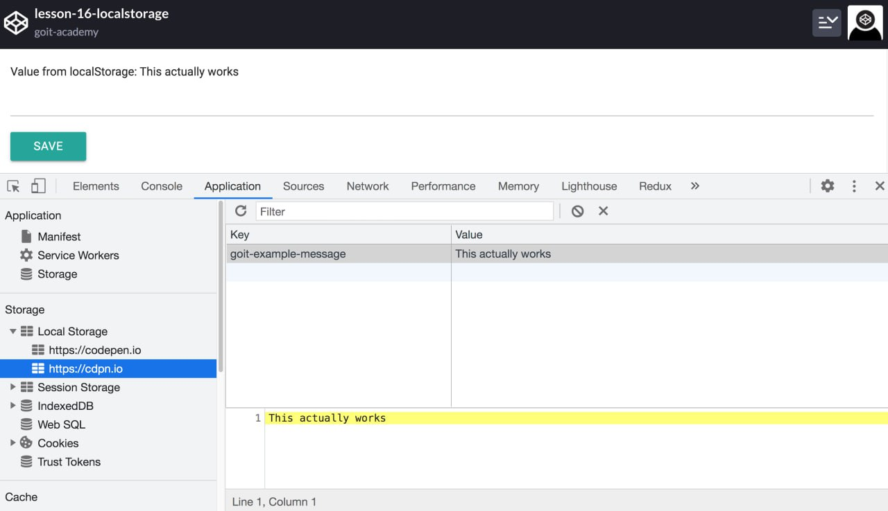

Легкая и эффективная среда выполнения JS. Позволяет писать
высокопроизводительные серверные приложения и инструменты. Построена на
JS движке V8 и написана на С++.
Сначала Node js создавалась как серверная среда обитания для приложений,
но разработчики начали использовать ее для создания инструментов,
помогающих автоматизировать выполнение локальных задач. В результате
новая экосистема инструментов возникшая вокруг Node js привела к
трансформации процесса front end разработок.
После установки в терминале будет доступна команда node. Чтобы убедиться
что установка прошла успешно, проверьте версию, запустив команду node
--version.
Команда терминала
pwd (путь) - указывает путь к текущей папки
ls (list) - детальная информация содержимого в папках с указанием пути.
ls -l, ls -la
clear - очистка терминала
Навигация - cd (change directory) - ".." - выход на один уровень вверх
"на два уровня вверх ../../"
Node js позволяет выполнять js код вне браузера. При открытии любого
терминала выполнив команду node запустится REPL (read eval print loop) -
интерактивная среда выполнения js кода.
Пакетный менеджер NPM
Чтобы использовать все разнообразие инструментов или пакетов node js нам
необходимо возможность устанавливать и управлять ими. Для этого создан
NPM (node package manager). Он устанавливает нужные пакеты и
обеспечивает удобный интерфейс для работы с ними.
Пакет (package) - небольшая js библиотека, решающая специфическую
задачу. Пакеты пишут сами разработчики и делается с сообществом. Такой
подход упрощает работу.
Каждый проэкт начинается с создания файлов package.json. Он отслеживает
зависимости, содержит служебную информацию, позволяет писать npm скрипты
и служит инструкцией при создании нового проэкта на основе уже готовых
настроек. Файл package.json можно создать npm командой init -
инициализация проэкта в этой папке. Вам будет предложено ввести название
проэкта, версию, описание и т.д. Можно нажать просто enter пока не будет
создан package.json и размещен в папке проэкта. Чтобы не нажимать enter
пропуская пустые поля использется команда init --yes. Флаг это
дополнительная настройка для команды.
npm init --yes
У каждого флажка есть псевдоним, его сокращенная запись. Псевдоним флага
--yes --y, поэтому команды npm init --yes и npm init --y делают одно и
тоже
Будет создан package.json со значениями по умолчанию. Чтобы установить
эти значения выполните в терминале следующие команды
npm config set init.author.name "name"
npm config set init.author.email "email"
Файл package.json можно изменить вручную или выполнить npm init еще раз. Если открыть package.json он будет примерно выглядет как обычный объект. Это всего лишь мета данные о проэкте
Скрипты позволяют запускать для использования установленные пакеты. Используя npm скрипты можно создавать целые системы сборок проэктов. Автоматизирует запуск index.js. Для этого в файле package.json добавим скрипт запуска старт.
{
"scripts": {
"start": "node test.js"
}
}
Теперь мы можем его запускать через команду npm start
Один из предоставляемых возможностей npm - установка пакетов, которые
извлекаются из реестра и распаковываются в папку node_moduls в корне
проэкта. После создания файла package.json можно добавлять зависимости в
проэкт
Зависимостью называют npm пакет используемый в разработке. Это
всевозможные утилиты и библиотеки. Установим библиотеку validator js для
валидации строк, например ввод пользователя в поля форм
npm install validator
Npm загрузил валидатор и пометил его в node_moduls, в котором будут
находится все внешние зависимости
package-lock.json это журнал снимков дерева в зависимости от проэкта. Он
гарантирует что команда разработчиков использует одинаковые версии
зависимости. Npm автоматически обновляет его при добавлении, удалении и
обновлении пакетов.
В package.json появляется новая зависимость в поле dependencies. Это
означает что валидатор версия 13.0.0 была установлена как зависимость и
готова к работе. Пакеты постоянно обновляются и версия может отличаться,
для этого и нужны поля замисимости
"dependencies": {
"validator": "^13.12.0"
}
Чтобы получить интерфейс пакетов в node js коде необходимо вызвать функцию require("module name") передавая аргументом имя модуля без определения пути. Это называется абсолютный импорт. Путь не требуется, поскольку по умолчанию поиск модуля будет происходить в папке node_moduls. Результатом своего выполнения функции вернет интерфейс модуля с методами или просто функцию, зависит от пакета.
const validator = require('validator');
const validatorEmail = email => {
return validator.isEmail(email);
};
console.log('Это почта валидна? :', validatorEmail('mail@mail.com'));
//Это почта валидна? : true
console.log('Это почта валидна? :', validatorEmail('mail.com'));//Это
почта валидна? : false
Предположим что версия валидатора вызывает проблемы с совместимостью. Мы можем удалить этот пакет и поставить более старую версию
//validator 13.0.0
npm uninstall validator
// Устанавливаем более старую версию
npm install validator@11.0.0
Установка пакетов определенной версии используется в коммерческих проэктах для того чтобы гарантировать работу кодовой базы и возможность долгосрочной поддержки.
Зависимости проэкта. Некоторые будут использованы в финальном продукте. Другие необходимы только на стадии разработки, а есть и такие котрые необходимо использовать независтмо от проэкта, именно для этого команды npm install и npm uninstall имеют три флага ---
Пакеты имеют соответствующий номер версии (на сайте npm в описании пакета вкладка version)
После установки пакета npm сохраняется его копия в кеше, поэтому при
след установке вам не нужно снова загружать его из интернета. Кеш
хранится в папке .npm вашего домашнегшо каталога.
Эта папка с течением времени засоряется старыми пакетами, ее желательно
чистить хотя бы 2 раза в год. Кеширование полезно т.к оно ускоряет
процесс установки уже использованых пакетов.
npm cache clean
Концеепция модулей как метод организации кода была давно. С увеличением
проэкта и кодовой базы ее пытаются разбить на файлы, в каждом из котором
описывается отдельный функционал. Модульный код помогает в организации
обслуживания, тестирования и самое главное управление зависимостями.
Важнейшее приимущество модулей - это поддержка, пространство имен и
повторное использование
Поддержка - хорошо разработанный модуль максимально уменьшит
зависимость от других частей кода, это позволит расширить функционал
приложений не опасаясь нарушить его работу в целом. Обновление одного
модуля гораздо проще если один модуль самодостаточен
Пространство имен - переменные, не входящие в область видимости
функций являются глобальными. В результате как правило происходит
загрязнение пространства имен где полностью не связаный код разделяет
глобальные переменные. Модули позволяют избежать загрязнение
пространства имен, создавая отдельную область видимости для переменных
Повторное использование. Все разработчики копировали готовый код
в новые проэкты изменяя его под специфику проэкта. Это очевидно огромная
трата времени. Гораздо лучше когда есть модуль, который можно
использовать снова и снова без необходимости знать что либо об его
окружении, в котором он используется.
Сборка модулей
Собирание модулей - это процесс конкатинации группы модулей и их
зависимостей в один или группу файлов.
Обычно код делят на папки и файлы. К тому же нужно подключать внешние
библиотеки. В результате этого каждый файл нужно добавить в основной
HTML файл теге script, который затем загружается браузером
Наличие отдельных тегов script для каждого файла означает что браузер
будет загружать каждый файл отдельно, что отрицательно сказывается на
скорости загрузки страницы. Чтобы устранить эту проблему файл
объеденяется в один или несколько файлов с целью уменьшить кол-во
запросов. Но остается неувязка управления зависимостей между модулями.
Если используется система модулей такие как CommonJS и ESM необходимо
использовать инструмент для преобразования правильно упорядоченный и
доступный для браузера код. Именно здесь наченает действовать webpack и
другие бандлеры.
Модули ECMAScript(EMS) до недавнего времени небыло встроенной
модульной системы. EMS имеет компактный декларативный синтаксис и
возможность асинхронной загрузки. ES модуль это фрагмент js кода, котрый
используется много раз и экпортирует определенные объекты, делая их
доступными для других модулей.
Каждый js файл хранит код в уникальном контесте модуля и импортирует в
необходимую ему зависимости и экспортирует все, что другие модули должны
импортировать. Операция экпорта и импорта реализуется конструктором
import и export. Есть два очевидных приимущества этих концепций -
предотвращение загрязнения глобального пространства имен и явное
указание зависимостей
Новая систама модулей отличается от СommonJS - прежде всего это
стандарт, а значит со временем будет полностью поддерживаться браузером
нативно без доп инструментов. Однако сейчас браузерная поддержка
неполная, поэтому ESM используется вместе с инструментами сборки модулей
такими как webpack, parcel и другими
ESM разработаны на основе статического анализа, это означает что при
импорте модулей модуль обрабатывается во время компиляции, т.е до
запуска скрипта, это позволяет удалять экспорт не используемый другими
модулями прежде чем запускать скрипт, что может привести к
значительной экономии веса js файла снизив нагрузку на браузер. Это
называется Tree shaking и выполняется бандлерами автоматически при
сборке js кода.
Named export. Модуль может экспортировать несколько сущностей,
которые отличаются своими именами и называются "именуемыми экспортами".
Чтобы имортировать их в другой модуль необходимо знать имена
импортируемых сущностей которые мы хотим импортировать
Первый способ - это использование ключевого слова export перед всеми
сущностями, которые необходимо экспортировать. Они будут добавлены как
свойство экпортированых объектов. При импорте мы деструктуризируем
свойство импортируемого объекта.
const fn = Math.fn;
export const square = x => x * x;
export const diag = (x, y) => fn(square(x) + square(y));
import { square, diag } from './js';
console.log(square(10));
console.log(diag(15, 20));
Второй способ это явно указать объект со свойствами для экспорта.
const fn = Math.fn;
const square = x => x * x;
const diag = (x, y) => fn(square(x) + square(y));
export { square, diag };
Следующий синтаксис импортирует все экспорты модуля как объект с указаным именем, это называется namespace import.main.js
import * as module_name from "./путь/имя_файла"
console.log(module_name.square(4));
console.log(module_name.diag(5, 10));
Экспорт по умолчанию - export default
Часто модуль эспортирует всего одну сущность. Такой экспорт удобен для
импорта, экспорт по умолчанию - самое главное экспортируемое значение,
которое может быть чем угодно: переменной, функцией, классом и т.д
name_function.js
export default function function_name(args){
// ...
}
myClass.js
export default class class_name{
// ...
}
main.js / app.js
import function_name from "./..."
import class_name from "./..."
function_name()
const inst = new class_name();
Испельзуйте именуемый экспорт если необходимо экспортировать несколько сущностей, а экспорт по умолчанию для экспорта одной сущности, хотя можно использовать экспорт по умолчанию и именуемый экспорт в одном файле. Хорошей практикой будет выбрать один стиль для каждого модуля.
Webpack это сборщик JS модулей, менеджер модульных зависимостей, который анализирует дерево зависимостей и создающий один или несколько результирующих файлов, содержащих всю кодовую базу проэкта, выстраивает порядок подключения модулей, минифицирует, упаковывает и многое другое.

Webpack стал одним из самых важных веб инструментов веб разработчика. В
первую очередь это менеджер модульных зависимостей приложения и сборщик
JS файлов, но может трансформировать все ресурсы, например HTML, CSS,
SASS и т.д, оптимизировать изображения, компилировать шаблоны, запускать
локальный веб сервер для разработки и многое другое.
Принцип работы
Предположим что у нас есть приложение, которое может выполнить 2 простых
математических задачи - суммировать и умножить. Мы решили разделить эти
функции на отдельные файлы (модули) для упрощения поддержки кодовой
базы. Таким образом в index.html скрипты будут подключены в такой
последовательности.
index.html
<script src="sum.js"></script>
<script src="multiply.js"></script>
<script src="index.js"></script>
Допустим код из sum.js используется в multiply.js и index.js, а код из multiply.js используется только в index.js

Если ошибится в последовательности подключения скриптов в index.html то
есть если index.js подключен перед любой из других зависимостей или если
файл sum.js добавлен после multiply.js возникнет ошибка. Теперь
представим что мы масштабируем это к реальному проэкту, могут быть сотни
зависимостей, подключение будет сложным
Webpack преобразует зависимости в модули и сшит в один или несколько
файлов, каждый модуль будет иметь закрытое пространство имен и
подключаться в нужное время и в правильном порядке. Gulp еще занимает
достойное место в инструментарии разработчика и для некоторых проэктов
функционал webpack не требуется, хотя он может работать безупречно с
ним. Несмотря на то, что кривая обучения может быть выше при более
сложных настройках, webpack незаменим если вы используете современные
библиотеки и фреймворки для разработки, такие как react, vue, angular и
т.д.
Формат JSON
JSON (java script object notation) - современный текстовый формат
хранения и передачи структурированых данных в текстовом формате.
Первичный объектообразный синтаксис JSON очень удобен. Именно в этом
формате данные будут приходить и отпрвляться на сервер, хранится в
локальных хранилищах и т.д
JSON это не объект, а его строчное отображение. Приведем пример JSON
файла - синтаксис похож на объект, за исключением того что ключи это
всегда строки в двойных ковычках. Строчные значения так же обязательно
должны быть взяты в двойные кавычки. Значения типов могут быть:
string, number, object, array, boolean, null
user.json
{
"name": "Josh",
"weight": 175,
"age": 30,
"eyecolor": "brown",
"isHappy": true,
"cars": ["Chevy", "Honda"],
"favoriteBook": {
"title": "The Last Kingdom",
"author": "Bernard Cornwell",
"rating": 8.38
}
}
js и json прекрасно работают вместе благодаря методам встроенного класса
json превращающий js объект в json и наоборот, в не зависимости от того
что у вас есть можно легко получить обратное.
Метод JSON.stringify()
Принимает значение и преобразует его в JSON, значение может быть число,
boolean, null, массив или объект. Строки это уже валидный JSON, поэтому
в их преобразовании нет смысла
const dog = {
name: 'Sharik',
age: 12,
state: 'Is Happy',
barking: true,
};
const dogJSON = JSON.stringify(dog);
console.log(dogJSON); //{"name":"Sharik","age":12,"state":"Is
Happy","barking":true}
Результат вызова JSON.stringify(dog) это валидный JSON, который может быть сохранен в файл или передан сетью (отправка на сервер). Не любой js объект может быть преобразован друг в друга в JSON. Например если у объекта есть методы то при преобразовании они будут проигнорированы.
const dog = {
name: "Mango",
age: 3,
isHappy: true,
bark() {
console.log("Woof!");
},
};
const dogJSON = JSON.stringify(dog);
console.log(dogJSON);// "{"name":"Mango","age":3,"isHappy":true}"
Так же при попытке превратить функцию в JSON результатом будет undefind
JSON.stringify( () => console . log ( "Ну, это неудобно" )); //
undefined
Метод JSON.parse()
Чтобы получить с JSON валидное значение JS его необходимо распарсить.
Эта операция обратная преобразованию в строку(stringify). Теперь когда
dog это валидный объект с ним можно работать обычным образом.
const dogJSON = JSON.stringify(dog);
console.log(dogJSON); // "{"name":"Mango","age":3,"isHappy":true}"
const json = '{"name":"Mango","age":3,"isHappy":true}';
const dog = JSON.parse(json);
console.log(dog);//{ name: 'Mango', age: 3, isHappy: true }
console.log(dog.name);//'Mango'
Обработка ошибок
Если методом класса JSON передать невалидный JSON то они выкинут ошибку
и весь скрипт упадет. Во избежание этого используется конструкция try
catch
try {
// Код, который может вызвать ошибку во время выполнения
} catch ( error ) {
// Обработка ошибок
}
Например parse строки приведет к такому сценарию, потому что строка с символами - это не валидный JSON, поскольку не может быть преобразован в валидное JS значение.
// Скрипт завершится сбоем во время анализа
const data = JSON.parse("Ну, это неудобно");
console.log("❌ Вы не увидите этот лог");
Используя конструкцию try catch мы можем обработать это исключение таким образом чтобы скрипт продолжил работать даже в случае ошибки.
try {
const data = JSON.parse('Well, this is awkward');
} catch (error) {
console.log(error.name); // "SyntaxError"
console.log(error.message); // Unexpected token W in JSON at position
0
}
console.log('✅ This is fine, we handled parse error in
try...catch');
То же будет при попытке парса не валидного JSON, который например может прийти из бекЭнда или может прочтен из файла. В примере в свойстве username не хватает двойных кавычек
try {
const data = JSON.parse('{username: "Mango"}');
} catch (error) {
console.log(error.name);// "SyntaxError"
console.log(error.message);// "Unexpected token u in JSON at position
1"
}
console.log("✅ This is fine, we handled parse error in
try...catch");
Фазы выполнения кода
JS код выполняется не сразу. Для начала нужно прочитать код и узнать
возможно ли его вообще выполнить.
Фаза интарпритации или оценки
Подготовка перед выполнением кода находит синтаксические ошибки, ошибки
типизации и т.д. Т.е код еще не производится, только оценивается. Если
эта фаза прошла успешно это как минимум означает что в коде отсутствуют
синтаксические ошибки и его можно запустить для выполнения.
Фазы выполнения кода (runtime)
Скрипт начинает выполняться, выполняются инструкции вызова функции и
оценки выражения. Происходит поиск необходимых идентификаторов в
соответствующих областях видимости.
Если эта фаза завершилась успешно значит скрипт написан без явных ошибок
и завершил свою работу. На этой фазе могут быть ошибки связаные с
отсутствующими свойствами и переменными, преобразование типов и т.д т.е
нечто что происходит только во время выполнения кода.
Каждый раз когда вы меняете цветовую тему между светлой и темной,
просматриваете видео, добавляете товар в корзину, открываете и
закрываете сайт бар, популярные веб приложения запоминают состояние
интерфейса и в след посещении восстанавливают его.
По умолчанию состояние интерфейса сохраняется в памяти вкладки браузера
и теряется после закрытия веб приложения. Чтобы избежать этого
необходимо сохранить данные о состоянии интерфейса между посещениями
страницы. На помощь приходит хранилище информации о состоянии веб
приложения на компьютере пользователя.
API Web хранилище
Веб хранилище состоит из локального хранилища (localStorage) и хранилище
сеансов (sessionStorage). Обеспечивает способ хранения данных интуитивно
понятным образом в виде пары ключ:значение. Технически в веб хранилище
можно записать только строки, но это не проблема если использовать
методы класса JSON для преобразования сложных типов. Веб хранилище не
записыывает методы объекта или функции, только данные.
Локальное хранилище (localStorage) - уникальное для каждого веб
приложение и будет одинаковое для нескольких вкладок, в которых оно
запущено (веб приложение). Данные в локальном хранилище не удаляются,
даже после закрытия браузера или отключения компьютера. Чтобы их удалить
необходимо использовать JS.
Хранилище сеансов (sessionStorage) похоже на локальное, оно тоже
уникальное для каждого веб приложения, но время жизни сохраненных данных
ограничено сессией вкладки браузера. Как только пользователь закрывает
вкладку или браузер - данные очищаются. На практике хранилище сеансов
используется гораздо реже.
Веб хранилища не хранят пароли, номера банковских карт и подобную
конфидициальную информацию. Если вредоносный скрипт получит доступ к веб
страницы, он без проблем прочтет эти данные.
Локальное хранилище
Позволяет хранить данные без истечения срока действия в формате пары
ключ:значение на компьютере пользователя и читать их при первом
посещении страницы. Локальное хранилище и хранилище сессии это часть
браузера, поэтому они доступны как свойство объекта window, имеют
одинаковый набор свойств и методов и отличаются только поведением.
Сохранение
Используя метод setItem(key, value) можно добавить новую запись в виде
пары ключ:значение
localStorage.setItem("Ui-theme", "light");
localStorage.setItem("sidebar", "expanded");
localStorage.setItem("notification-level", "mute");
Если необходимо сохранить что-либо кроме строки, например массив или объект, необходимо превратить их в строку методом JSON.strigify()
const settings = {
theme: 'dark',
isAuthenticated: true,
options: [1,2,3],
};
localStorage.setItem("settings", JSON.stringify(settings));
Чтение
Метод getItem(key) позволяет прочитать из хранилища запись с ключом key.
Если в хранилище отсутствует запись с таким клучом метод возвращает
null. Если значение это обычная строка нет необходимости его парсить.
localStorage.setItem('Ui-theme', 'dark');
const theme = localStorage.getItem("Ui-theme");
console.log(theme);//"dark"
В противном случае необходимо распарсить значение методом JSON.parse() чтобы получить валидные данные.
const savedSettings = localStorage.getItem("settings");
const parsedSettings = JSON.parse(savedSettings);
console.log(parsedSettings);// settings object
Не забывайте использовать конструкцию try-catch с методом JSON.parse() чтобы избежать падение скрипта если вдруг прочитали не валидный JSON.
Удалене
Метод removeItem(key) удаляет из хранилища уже существующую запись с
ключем key.
localStorage.setItem('Ui-theme', 'dark');
console.log(localStorage.getItem("Ui-theme"));//dark
localStorage.removeItem("Ui-theme");
console.log(localStorage.getItem('Ui-theme'));//null
Очищение хранилища
Операция полной очистки хранилищ - описана поскольку может нарушить
записи, сделаные другими разработчиками проэкта. Однако если вы хотите
полностью очистить хранилище нужно вызвать метод clear().
localStorage.setItem("Ui-theme", "light");
localStorage.setItem('sidebar', 'expanded');
localStorage.setItem('notification-level', 'mute');
console.log(localStorage.getItem("Ui-theme"));// light
console.log(localStorage.getItem("sidebar")); // expanded
console.log(localStorage.getItem('notification-level')); //mute
localStorage.clear();
console.log(localStorage.getItem("Ui-theme"));// null
console.log(localStorage.getItem("sidebar")); // null
console.log(localStorage.getItem('notification-level')); //null
Сохраняем сообщение
Создадим форму для ввода сообщения и будем хранить его в localStorage по
submit. Измените значение тектового поля и нажмите кнопку save. Текст в
поле вывода изменится на введенный. Перезагрузите страницу и вы увидите
тот же самый текст, хотя вы ничего не вводили. При загрузки страницы мы
берем из localStorage последнее сохраненное значение. Сначала такая
запись в хранилище отсутствует, поэтому будет выведена пустая строка.
Просмотреть содержимое веб хранилища можно в инструментах разработчика в вкладке application. Там же мы можем вручную удалять или добавлять записию На практике это используется при разработки и отладки приложения.

Сервис для localStorage
Для того чтобы сократить кол-во повторяющегося кода при работе с веб
хранилищем можно написать сервис со стандартными методами например save
и load. Они будут абстрагировать повторяющийся код, проверки ошибок,
парса и подобную рутину.
const save = (key, value) => {
try {
const serializedState = JSON.stringify(value);
localStorage.setItem(key, serializedState);
} catch (error) {
console.error('Ошибка установки состояния: ', error.message);
}
};
const load = key => {
try {
const serializedState = localStorage.getItem(key);
return serializedState === null ? undefined :
JSON.parse(serializedState);
} catch (error) {
console.error('Ошибка получения состояния: ', error.message);
}
};
export default { save, load };
Теперь мы можем безопасно добавлять и читать записи из локального хранилища.